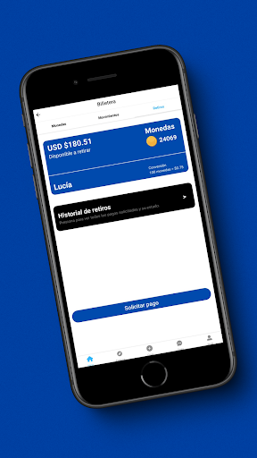
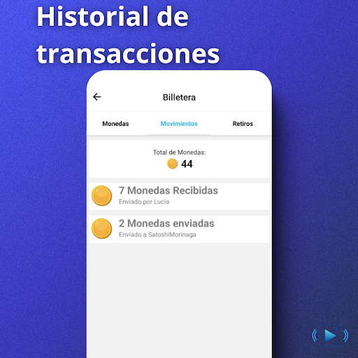
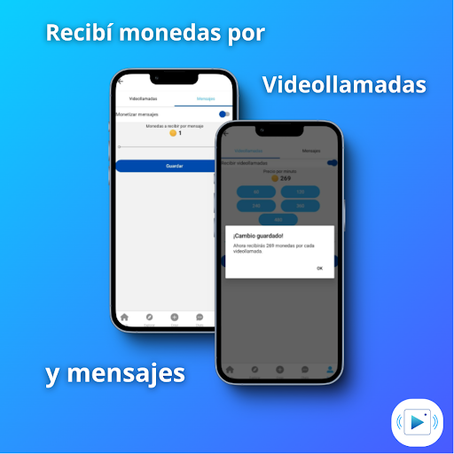
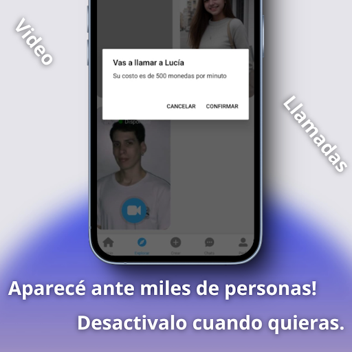
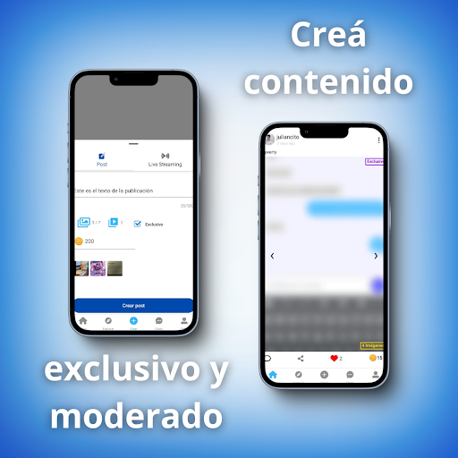
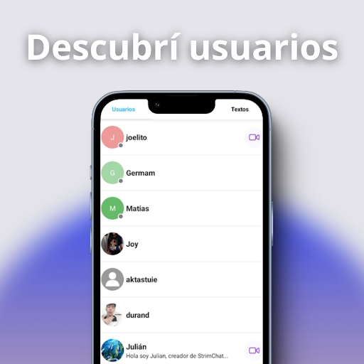
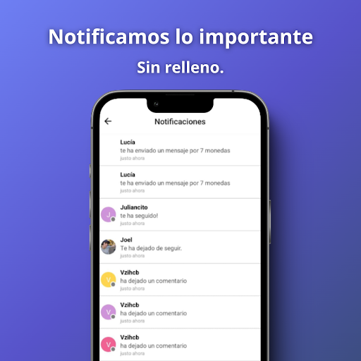
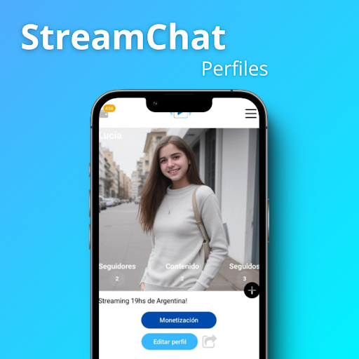

Descubrí
Explorá publicaciones, historias y perfiles.
StreamChat · Sólo adultos
Publicá contenido, descubrí personas, conversá por chat y participá de llamadas o transmisiones en una experiencia social para mayores de 18 años.
Publicaciones, historias, comentarios y perfiles.
Chat, llamadas y transmisiones desde el celular.
Preferencias, bloqueos, reportes y eliminación de cuenta.
Capturas actuales
Estas imágenes se importaron de la ficha vigente. El panel conserva el original y permite excluirlo o reemplazarlo en un lanzamiento aprobado.








Experiencia
Explorá publicaciones, historias y perfiles.
Enviá mensajes y conectate mediante llamadas.
Compartí momentos en vivo con la comunidad.
Controlá contenido sensible, notificaciones, bloqueos y reportes.